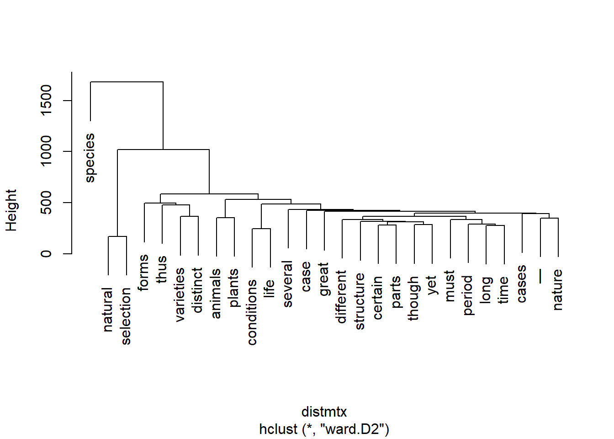
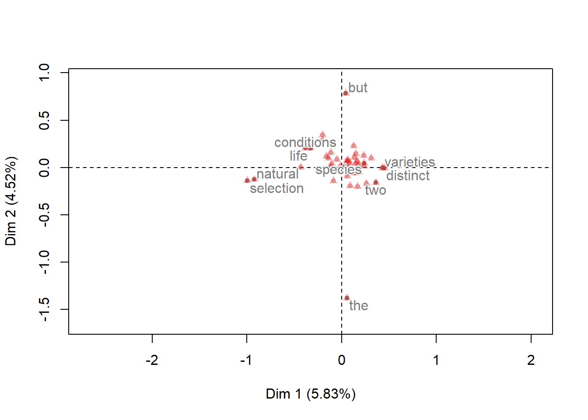
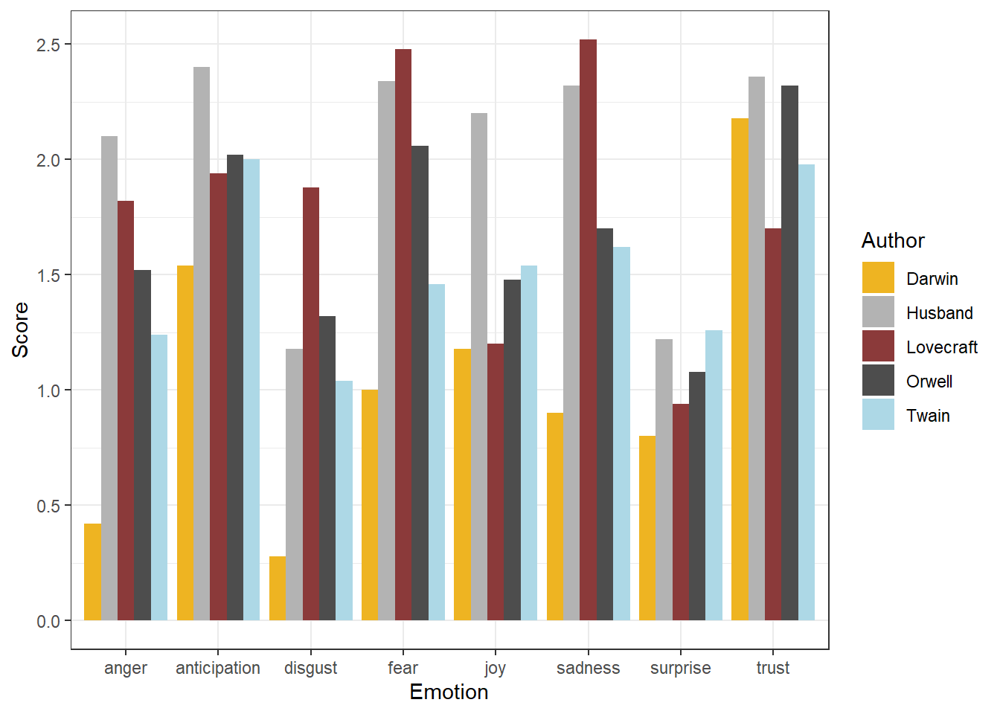

Text Analysis
UQ SLC Digital Team
2019-07-12

1 Introduction
This section introduces Text Analysis, i.e. computer-based analysis of language data or the (semi-)automated extraction of information from text. The advantage of Text Analysis over manual techniques lies in the fact that Text Analysis allows to extract information from large sets of textual data and in a replicable manner. Other terms that are more or less synonymous with Text Analysis are Text Mining or Text Analytics (sometimes, Text Analysis is considered more qualitative while Text Analytics is considered to be quantitative). This distinction is not taken up here as Text Analysis, while allowing for qualitative analysis, builds upon quantitative information, i.e. information about frequencies or conditional probabilities.
Most of the applications of Text Analysis are based upon a relatively limited number of key procedures or concepts (e.g. concordancing, word frequencies, annotation or tagging, parsing, collocation, text classification, Sentiment Analysis, Entity Extraction, Topic Modelling, etc.). In the following, we will explore these procedures and introduce some basic tools that help you perform the introduced tasks.
2 Distant Reading
Distant Reading is a cover term for applications of Text Analysis that allow to investigate literary and cultural trends using text data. Distant Reading contrasts with close reading, i.e. reading texts in the traditional sense whereas Distant Reading refers to the analysis of large amounts of text. Text Analysis and distant reading are similar with respect to the methods that are used but different with respect to their outlook. The outlook of distant reading is to extract information from text without close reading, i.e. reading the document(s) itself but rather focusing on emerging patterns in the language that is used.
Google N-Gram Viewer results for “ communist “,” terror “,” democratic “,” liberal “, and “ terror “ from 1820 to 2008.
Distant Reading is very attractive because it can be applied to so many different research questions as the only requirements are that the data is present in text format and is sufficiently large. If these conditions are met, then Distant Reading or Text Analysis methods can offer a myriad of insights that would not be derivable from close reading techniques.
3 Concordancing
In Text Analysis, concordancing refers to the extraction of words from a given text or texts. Commonly, concordances are displayed in the form of KWIC displays (Key Word in Context) where the search term is shown with some preceding and following context.
KWIC display of the search term language extracted from the BROWN corpus in the program AntConc.
Concordancing is helpful for inspecting how often a given word occurs in a text or a collection of texts, for seeing how the term is used in the data, for extracting examples, and it also represents a basic procedure and often the first step in more sophisticated analyses of language data.
3.1 Practical example
In this example, we will use “R” to create a KWIC display. More precisely, we will load Charles Darwin’s “On the origin of species” and investigate his use of the term “natural selection” in across chapters.
# load libraries
library(dplyr)
library(stringr)
# read in text
darwin <- readLines("https://slcladal.github.io/data/origindarwin.txt") %>%
paste(sep = " ", collapse = " ") %>%
str_replace_all("(CHAPTER [XVI]{1,7}\\.{0,1}) ", "qwertz\\1") %>%
tolower() %>%
strsplit("qwertz") %>%
unlist()
# inspect data
nchar(darwin)## [1] 10133 76155 40735 37418 121497 75187 95601 102879 83597 81774
## [11] 72427 70938 74510 53292 114321 70663Now that we have the subsections of the data that we aim to investigate, we can perform the concordancing. To create a KWIC display, we load the function “ConcR” from a script called “ConcR_2.3_loadedfiles.R”. Then we define a pattern that we want to look for (the pattern can be a simple word or it contain regular expressions). Then, we define the amount of context that we want to have displayed (in our case 50 characters). Finally, we run the concordance function “ConcR” with the arguments “darwin” the text elements that we want to inspect, the search pattern, and the context.
# load function for concordancing
source("https://slcladal.github.io/rscripts/ConcR_2.3_loadedfiles.r")
# start concordancing
darwinnatsel <- ConcR(darwin, "organism[s]{0,1}", 50)
# inspect data
darwinnatsel[1:5, 2:ncol(darwinnatsel)]## PreContext Token
## 1 <NA> <NA>
## 2 y generations. no case is on record of a variable organism
## 3 there are two factors; namely, the nature of the organism
## 4 ects of the conditions of life on each individual organism
## 5 hat unlike their parents. i may add, that as some organisms
## PostContext
## 1 <NA>
## 2 ceasing to vary wnder cultivation. our oldest cul
## 3 , and the nature of the conditions. the former see
## 4 , in nearly the same manner as the chill affects d
## 5 breed freely under the most unnat- ural conditionWe now have the KWIC display but would like to clean the display and get rid of the rows that do not contain information (which happens if the search pattern does not occur in a subfile that we searched).
In addition, we want to extract the chapter in which the instance has occurred.
# clean data
darwinnatsel1 <- darwinnatsel[complete.cases(darwinnatsel),]
# determine chapter
darwinnatsel1$Chapter <- ifelse(grepl("chapter [xvi]{1,7}\\.{0,1} .*", darwinnatsel1$OriginalString) == T, gsub("(chapter [xvi]{1,7})\\.{0,1} .*", "\\1", darwinnatsel1$OriginalString), darwinnatsel1$OriginalString)
# remove OriginalString column
darwinnatsel1$OriginalString <- NULL
# inspect data
head(darwinnatsel1)## PreContext Token
## 2 y generations. no case is on record of a variable organism
## 3 there are two factors; namely, the nature of the organism
## 4 ects of the conditions of life on each individual organism
## 5 hat unlike their parents. i may add, that as some organisms
## 6 e importance in comparison with the nature of the organism
## 7 likewise neces- sarily occurs with closely allied organisms
## PostContext Chapter
## 2 ceasing to vary wnder cultivation. our oldest cul chapter i
## 3 , and the nature of the conditions. the former see chapter i
## 4 , in nearly the same manner as the chill affects d chapter i
## 5 breed freely under the most unnat- ural condition chapter i
## 6 in determining each particular form of variation chapter i
## 7 , which inhabit distinct continents or islands. wh chapter iiNow, the KWIC display is finished and we could go about investigating how Darwin has used the term “organism”.
4 Word Frequency
One basic aspect of Text Analysis consists in extracting word frequency lists, i.e. determining how often word forms occur in a given text or collection of texts. In fact, frequency information lies at the very core of Text Analysis.
To exemplify how frequency information can help us in an analysis, we will continue working with the KWIC display that we have created above.
In the following, we want to find out about changes in the frequency with which the term “organism” has been used across chapters in Darwin’s “Origin”.
In a first step, we extract the number of words in each chapter.
# extract number of words per chapter
library(dplyr)
darwinchapters <- darwin %>%
strsplit(" ")
words <- sapply(darwinchapters, function(x) length(x))
# inspect data
words## [1] 1855 14064 7455 7135 22316 13915 17780 19054 15846 14740 13312
## [12] 12995 13752 9816 20966 12986Next, we extract the number of matches in each chapter.
# extract number of matches per chapter
library(stringr)
matcheschapters <- darwin %>%
str_extract_all(., "organism[s]{0,1}")
matches <- sapply(matcheschapters, function(x) length(x))
# inspect data
matches## [1] 0 5 3 3 9 3 3 3 0 1 6 6 10 5 8 7Now, we extract the names of the chapters and create a table with the chapter names and the relative frequency of matches per 1,000 words.
# extract chapters
Chapters <- as.vector(unlist(sapply(darwin, function(x){
x <- gsub("(chapter [xvi]{1,7})\\.{0,1} .*", "\\1", x)
x <- ifelse(nchar(x) > 50, "chapter 0", x)
})))
# calculate rel. freq of serach term per chapter
Frequency <- matches/words*1000
# create table of results
tb <- data.frame(Chapters, Frequency)
# inspect results
head(tb)## Chapters Frequency
## 1 chapter 0 0.0000000
## 2 chapter i 0.3555176
## 3 chapter ii 0.4024145
## 4 chapter iii 0.4204625
## 5 chapter iv 0.4032981
## 6 chapter v 0.2155947We can now visualize the relative frequencies of our search word per chapter.
# load library
library(ggplot2)
# create plot
ggplot(tb, aes(x=Chapters, y=Frequency, group =1)) +
geom_smooth(aes(y = Frequency, x = Chapters), color = "goldenrod2")+
geom_line(aes(y = Frequency, x = Chapters), color = "indianred4") +
guides(color=guide_legend(override.aes=list(fill=NA))) +
theme(axis.text.x = element_text(angle = 45, hjust = 1))+
scale_y_continuous(name ="Relative Frequency (per 1,000 words)")
We will now briefly check an example where we simply extract a frequency list from a corpus.
# load library
library(tm)
# load and process corpus
corpuswords <- readLines("https://slcladal.github.io/data/origindarwin.txt") %>%
tolower() %>%
removeWords(stopwords("english")) %>%
str_replace_all("[^[:alpha:][:space:]]*", "") %>%
paste(sep = " ", collapse = " ") %>%
str_replace_all(" {2,}", " ") %>%
strsplit(" ") %>%
unlist()
# create table
wordfreqs <- corpuswords %>%
table() %>%
as.data.frame() %>%
arrange(desc(Freq))
# add column names
colnames(wordfreqs) <- c("Word", "Frequency")
# inspect data
head(wordfreqs)## Word Frequency
## 1 species 1755
## 2 one 777
## 3 will 757
## 4 may 650
## 5 many 590
## 6 can 583Such word frequency lists can be visualized, for example, as bargraphs.
# prepare data
wfd <- table(corpuswords)
wfd <- wfd[order(wfd, decreasing = T)]
wfd <- wfd[1:10]
# start plot
barplot(wfd, las = 1, ylim = c(0,2000), las=2)
text(seq(0.7, 11.5, 1.2), wfd+150, wfd)
Alternatively, word frequency lists can be visualized, although less informative, as word clouds.
# load library
library("wordcloud")
# create wordcloud
wordcloud(words = wordfreqs$Word, freq = wordfreqs$Frequency,
max.words=100, random.order=FALSE, rot.per=0.35,
colors=brewer.pal(8, "BrBG"))
Word lists can be used to determine differences between texts. For instance, we can load two different texts and check whether they differ with respect to word frequencies.
# load data
orwell <- readLines("https://slcladal.github.io/data/orwell.txt")
melville <- readLines("https://slcladal.github.io/data/melvillemobydick.txt")
# combine each text into one element
orwell <- paste(as.vector(unlist(orwell)), sep = " ", collapse = " ")
melville <- paste(as.vector(unlist(melville)), sep = " ", collapse = " ")
# load libraries
library(tm)
library(dplyr)
library(xtable)
# clean texts
docs <- Corpus(VectorSource(c(orwell, melville))) %>%
tm_map(removePunctuation) %>%
tm_map(removeNumbers) %>%
tm_map(tolower) %>%
tm_map(removeWords, stopwords("english")) %>%
tm_map(stripWhitespace) %>%
tm_map(PlainTextDocument)
# create term document matrix
tdm <- TermDocumentMatrix(docs) %>%
as.matrix()
colnames(tdm) <- c("Orwell","Melville")
# create comparison cloud
comparison.cloud(tdm, random.order=FALSE,
colors = c("orange","lightblue"),
title.size=2.5, max.words=200,
title.bg.colors = "white")
Frequency information can also tell us something about the nature of a text. For instance, private dialogues will typically contain higher rates of second person pronouns compared with more format text types, such as, for instance, scripted monologues like speeches. For this reason, word frequency lists can be used in text classification and to determine the formality of texts.
As an example, below you find the number of the second person pronouns “you” and “your” and the number of all words except for these second person pronouns in private dialogues compared with scripted monologues in the Irish component of the International corpus of English (ICE).
| Private dialogues | Scripted monologues | |
|---|---|---|
| you, your | 6761 | 659 |
| Other words | 259625 | 105295 |
If we calculate the percentage of second person pronouns in both text types and see whether private dialogues contain more of these second person pronouns than scripted monologues (i.e. speeches).
| Private dialogues | Scripted monologues | |
|---|---|---|
| you, your | 6761 | 659 |
| Other words | 259625 | 105295 |
| Percent | 2.60 | 0.63 |
This simple example shows that second person pronouns make up 2.6 percent of all words that are used in private dialogues while they only amount to 0.63 percent in scripted speeches. A handy way to present such differences visually are association and mosaic plots.
d <- matrix(c(6761, 659, 259625, 105295), nrow = 2, byrow = T)
colnames(d) <- c("D", "M")
rownames(d) <- c("you, your", "Other words")
assocplot(d)
Bars above the dashed line indicate relative overuse while bars below the line suggest relative underuse. Therefore, the association plot indicates underuse of “you/your” and overuse of “other words” in monologues while the opposite trends holds true for dialogues, i.e. overuse of “you/your” and underuse of “Other words”.
5 Collocations and N-grams
Collocation refers to the co-occurrence of words. A typical example of a collocation is “Merry Christmas” because the words merry and Christmas occur together more frequently together than would be expected by chance, if words were just randomly stringed together.
N-grams are related to collocates in that they represent words that occur together (bi-grams are two words that occur together, tri-grams three words and so on). Fortunately, creating N-gram lists is very easy. We will use the “Origin” to create a bi-gram list. As a first step, we load the data and split it into individual words.
# load libraries
library(dplyr)
library(stringr)
library(tm)
# read in text
darwin <- readLines("https://slcladal.github.io/data/origindarwin.txt") %>%
paste(sep = " ", collapse = " ") %>%
unlist() %>%
as.vector() %>%
tolower() %>%
removePunctuation() %>%
str_replace_all(" {2,}", " ") %>%
strsplit(" ") %>%
as.vector() %>%
unlist()
# inspect data
head(darwin)## [1] "the" "origin" "of" "species" "by" "charles"# create data frame
darwindf <- data.frame(darwin[1:length(darwin)-1],
darwin[2:length(darwin)])
# add column names
colnames(darwindf) <- c("Word1", "Word2")
# inspect data
head(darwindf)## Word1 Word2
## 1 the origin
## 2 origin of
## 3 of species
## 4 species by
## 5 by charles
## 6 charles darwin# create data frame
darwin2grams <- paste(darwindf$Word1, darwindf$Word2, sep = " ")
# tabulate results
darwin2gramstb <- table(darwin2grams)
# create data frame
darwin2gramsdf <- data.frame(darwin2gramstb)
# order data frame
darwin2gramsdf <- darwin2gramsdf[order(darwin2gramsdf$Freq, decreasing = T),]
# simplify column names
colnames(darwin2gramsdf) <- c("Bigram", "Frequency")
# inspect data
head(darwin2gramsdf)## Bigram Frequency
## 47490 of the 2673
## 34249 in the 1440
## 67399 the same 959
## 71688 to the 790
## 48173 on the 744
## 30694 have been 624Both N-grams and collocations are not only an important concept in language teaching but they are also fundamental in Text Analysis and many other research areas working with language data. Unfortunately, words that collocate do not have to be immediately adjacent but can also encompass several slots. This is unfortunate because it makes retrieval of collocates substantially more difficult compared with a situation in which we only need to extract words that occur right next to each other.
In the follwoing, we will extract collocations from Darwin’s “Origin”. In a first step, we will split the Origin into smaller chunks.
# read in text
darwinsentences <- readLines("https://slcladal.github.io/data/origindarwin.txt") %>%
paste(sep = " ", collapse = " ") %>%
str_replace_all(" {2,}", " ") %>%
str_replace_all("([A-Z]{2,} [A-Z]{2,}) ([A-Z][a-z]{1,} )", "\\1 qwertz\\2") %>%
str_replace_all("([a-z]{2,}\\.) ([A-Z] {0,1}[a-z]{0,30})", "\\1qwertz\\2") %>%
str_replace_all("([a-z]{2,}\\?) ([A-Z] {0,1}[a-z]{0,30})", "\\1qwertz\\2") %>%
strsplit("qwertz")%>%
unlist()
# inspect data
head(darwinsentences)## [1] "THE ORIGIN OF SPECIES BY CHARLES DARWIN AN HISTORICAL SKETCH OF THE PROGRESS OF OPINION ON THE ORIGIN OF SPECIES INTRODUCTION "
## [2] "When on board H.M.S. 'Beagle,' as naturalist, I was much struck with certain facts in the distribution of the organic beings in- habiting South America, and in the geological relations of the present to the past inhabitants of that continent."
## [3] "These facts, as will be seen in the latter chapters of this volume, seemed to throw some light on the origin of species — that mystery of mysteries, as it has been called by one of our greatest philosophers."
## [4] "On my return home, it occurred to me, in 1837, that something might perhaps be made out on this question by patiently accumulating and reflecting on all sorts of facts which could possibly have any bearing on it."
## [5] "After five years' work I allowed myself to specu- late on the subject, and drew up some short notes; these I enlarged in 1844 into a sketch of the conclusions, which then seemed to me probable; from that period to the present day I have steadily pursued the same object."
## [6] "I hope that I may be excused for entering on these personal details, as I give them to show that I have not been hasty in coming to a decision."In a next setp, we will create a matrix that shows cooccurrence of words.
# convert into corpus
darwincorpus <- Corpus(VectorSource(darwinsentences))
# clean corpus
darwincorpusclean <- darwincorpus %>%
tm_map(removePunctuation) %>%
tm_map(removeWords, stopwords(kind = "en")) %>%
tm_map(tolower)
# create document term matrix
darwindtm <- DocumentTermMatrix(darwincorpusclean, control=list(bounds = list(global=c(1, Inf)), weighting = weightBin))
# load library
require(Matrix)
# convert dtm into sparse matrix
darwinsdtm <- sparseMatrix(i = darwindtm$i, j = darwindtm$j,
x = darwindtm$v,
dims = c(darwindtm$nrow, darwindtm$ncol),
dimnames = dimnames(darwindtm))
# calculate cooccurrence counts
coocurrences <- t(darwinsdtm) %*% darwinsdtm
# convert into matrix
collocates <- as.matrix(coocurrences)
# inspect results
collocates[1:8, 1:5]## charles darwin historical introduction opinion
## charles 9 1 1 1 1
## darwin 1 1 1 1 1
## historical 1 1 4 1 1
## introduction 1 1 1 7 1
## opinion 1 1 1 1 10
## origin 1 1 2 2 1
## progress 1 1 1 1 1
## sketch 1 1 1 1 1# inspect size of matrix
ncol(collocates)## [1] 10634summary(rowSums(collocates))## Min. 1st Qu. Median Mean 3rd Qu. Max.
## 1.0 25.0 49.0 221.9 135.0 28133.0# remove terms that do not collocate with other terms
noncoll <- colnames(collocates)[which(rowSums(collocates) < 5000)]
# remove non-collocating terms
collocates <- collocates[!rownames(collocates) %in% noncoll, ]
collocates <- collocates[, !colnames(collocates) %in% noncoll]
# create distance matrix
distmtx <- dist(collocates)
# activate library
library("cluster") # activate library
clustertexts <- hclust( # hierarchical cluster object
distmtx, # use data diststudents
method="ward.D2") # ward.D as linkage method
plot(clustertexts, # plot result as dendrogram
hang = .25, # labels at split
main = "") # no title
An alternative way to display cooccurrence patterns are bi-plots. Biplots are commonly used to dispaly, for instance, the results of Correspondence Analyses.
# load library
library("FactoMineR")
library("factoextra")
# perform correspondence analysis
res.ca <- CA(collocates, graph = FALSE)
# cerate bi-plot
#fviz_ca_biplot(res.ca, repel = F, select.ind = list(cos2 = .02))
plot(res.ca, shadow = T, cex = 1, selectRow = "cos2 0.1", selectCol = "cos2 0.9", col.row = "gray50", title = "")
The bi-plot shows that “natural” and “selection” collocate, as do “life” and “conditions”, “distinct” and “species” as well as “two” and “varieties”. Other words with lower collocation strength are masked from the bi-plot. We will now use an example of one individual word to show, how collocation strength for individual terms is calculated and displayed as a network.
# load function for co-occurrence calculation
source("rscripts/calculateCoocStatistics.R")
# define minimum number of cooccurences
numberOfCoocs <- 10
# define term
coocTerm <- "selection"
# calculate cooccurence statistics
coocs <- calculateCoocStatistics(coocTerm, darwinsdtm, measure="LOGLIK")
# show strenght of cooccurence
print(coocs[1:numberOfCoocs])## natural theory variations effects acts
## 1476.38620 121.48373 112.17318 66.45145 51.64986
## modifications sexual power slight disuse
## 45.69396 44.95857 43.80820 42.97196 41.69089Now, we will vizualize the collocation network for our example term. Unfortunately, creating a graph object is rather complex.
# create graph object
resultGraph <- data.frame(from = character(), to = character(), sig = numeric(0))
# create data frame
tmpGraph <- data.frame(from = character(), to = character(), sig = numeric(0))
# fill data frame to produce the correct number of lines
tmpGraph[1:numberOfCoocs, 3] <- coocs[1:numberOfCoocs]
# enter search word into the first column in all lines
tmpGraph[, 1] <- coocTerm
# enter co-occurrences into second column
tmpGraph[, 2] <- names(coocs)[1:numberOfCoocs]
# enter collocation strength
tmpGraph[, 3] <- coocs[1:numberOfCoocs]
# attach data frame to resultGraph
resultGraph <- rbind(resultGraph, tmpGraph)# iterate over most significant numberOfCoocs co-occurrences
for (i in 1:numberOfCoocs){
# calculate co-occurrence strength for term i
newCoocTerm <- names(coocs)[i]
coocs2 <- calculateCoocStatistics(newCoocTerm, darwinsdtm, measure="LOGLIK")
# fill temporary graph object
tmpGraph <- data.frame(from = character(), to = character(), sig = numeric(0))
tmpGraph[1:numberOfCoocs, 3] <- coocs2[1:numberOfCoocs]
tmpGraph[, 1] <- newCoocTerm
tmpGraph[, 2] <- names(coocs2)[1:numberOfCoocs]
tmpGraph[, 3] <- coocs2[1:numberOfCoocs]
# append results to the result graph data frame
resultGraph <- rbind(resultGraph, tmpGraph[2:length(tmpGraph[, 1]), ])
}Now, we can create a network graph object.
# load packages
library(igraph)
# define graph and type ("F" means "Force Directed")
graphNetwork <- graph.data.frame(resultGraph, directed = F)
# identify nodes with fewer than 2 edges
graphVs <- V(graphNetwork)[degree(graphNetwork) < 2]
# removed these edges from graph
graphNetwork <- delete.vertices(graphNetwork, graphVs)
# sssign colors to edges and nodes (searchterm blue, rest orange)
V(graphNetwork)$color <- ifelse(V(graphNetwork)$name == coocTerm, 'cornflowerblue', 'orange')
# Edges with a significance of at least 50% of the maximum significance in the graph are drawn in orange
halfMaxSig <- max(E(graphNetwork)$sig) * 0.5
E(graphNetwork)$color <- ifelse(E(graphNetwork)$sig > halfMaxSig, "coral", "azure3")
# disable edges with radius
E(graphNetwork)$curved <- 0
# size the nodes by their degree of networking
V(graphNetwork)$size <- log(degree(graphNetwork)) * 5
# all nodes must be assigned a standard minimum-size
V(graphNetwork)$size[V(graphNetwork)$size < 5] <- 3
# edge thickness
E(graphNetwork)$width <- 1.5And finally, we can vizualize the network.
# Define the frame and spacing for the plot
par(mai=c(0,0,1,0))
# Finaler Plot
plot(graphNetwork,
layout = layout.fruchterman.reingold, # Force Directed Layout
main = paste("Cooccurrence network for", " \"", coocTerm, "\""),
vertex.label.family = "sans",
vertex.label.cex = .75,
vertex.shape = "circle",
vertex.label.dist = 2, # Labels of the nodes moved slightly
vertex.frame.color = 'darkolivegreen',
vertex.label.color = 'black', # Color of node names
vertex.label.font = 2, # Font of node names
vertex.label = V(graphNetwork)$name, # node names
vertex.label.cex = .75 # font size of node names
)
6 Tagging and Annotation
Tagging or annotation refers to a process in which information is added to existing text. The annotation can be very different depending on the task at hand. The most common type of annotation when it comes to language data is part-of-speech tagging where the word class is determined for each word in a text and the word class is then added to the word as a tag. However, there are many different ways to tag or annotate texts. Sentiment Analysis, for instance, also annotates texts or words with respect to its or their emotional value or polarity. In fact, annotation is required in many machine-learning contexts because annotated texts represent a training set on which an algorithm is trained that then predicts for unknown items what values they would most likely be assigned if the annotation were done manually.
6.1 Part-of-speech tagging (pos tagging)
For many analyses that use language data it is useful or even important to differentiate between different parts of speech. In order to determine the word class of a certain word, we use a procedure which is called part-of-speech tagging or pos-tagging for short. Part-of-speech tagging is offered by many online services (e.g. XXX).
# load corpus data
text <- readLines("https://slcladal.github.io/data/text2.txt", skipNul = T)
# clean data
text <- text[5] %>%
removeNumbers() %>%
stripWhitespace() %>%
str_replace_all("\"", "") %>%
str_replace_all("When Harry.*", "") %>%
strsplit("qwertz") %>%
unlist() %>%
stripWhitespace()
# inspect data
str(text)## chr "By chance, Harry encounters the man who gave him the book, just as the man has attended a funeral. He inquires "| __truncated__# load function
source("https://slcladal.github.io/rscripts/POStagObject.r") # for pos-tagging objects in R
# load libraries
library(NLP)
library(openNLP)
library(openNLPmodels.en)
# detach ggplot2 library becuase function "annotate"
# would be taken from ggplot2 rather than NLP
detach("package:factoextra", unload=TRUE)
detach("package:ggplot2", unload=TRUE)
# pos tagging data
textpos <- POStag(object = text)
textpos## [[1]]
## [1] "By/IN chance/NN ,/, Harry/NNP encounters/VBZ the/DT man/NN who/WP gave/VBD him/PRP the/DT book/NN ,/, just/RB as/IN the/DT man/NN has/VBZ attended/VBN a/DT funeral/NN ./. He/PRP inquires/VBZ about/IN the/DT magic/JJ theater/NN ,/, to/TO which/WDT the/DT man/NN replies/VBZ ,/, Not/RB for/IN everybody/NN ./."6.2 Syntactic Parsing
Parsing refers to another type of annotation in which either structural information (as in the case of XML documents) or syntactic relations are added to text. As syntactic parsing is commonly more relevant in the language sciences, the following will focus only on syntactic parsing. syntactic parsing builds on PoS-tagging and allows drawing syntactic trees or dependencies. Unfortunately, syntactic parsing still has relatively high error rates when dealing with language that is not very formal. However, syntactic parsing is very reliable when dealing with written language.
# extract text
text <- gsub("He inquires.*", "", text)
# convert character to string
s <- as.String(text)
# define sentence and word token annotator
sent_token_annotator <- Maxent_Sent_Token_Annotator()
word_token_annotator <- Maxent_Word_Token_Annotator()
# apply sentence and word annotatior
a2 <- annotate(s, list(sent_token_annotator, word_token_annotator))
# define syntactic parsing annotator
parse_annotator <- Parse_Annotator()
# apply parser
p <- parse_annotator(s, a2)
# extract parsed information
ptexts <- sapply(p$features, '[[', "parse")
ptexts## [1] "(TOP (S (PP (IN By) (NP (NN chance)))(, ,) (NP (NNP Harry)) (VP (VBD encounters) (NP (NP (DT the) (NN man)) (SBAR (WHNP (WP who)) (S (VP (VBD gave) (NP (PRP him)) (NP (DT the) (NN book))(, ,) (SBAR (RB just) (IN as) (S (NP (DT the) (NN man)) (VP (VBZ has) (VP (VBN attended) (NP (DT a) (NN funeral)))))))))))(. .)))"# read into NLP Tree objects.
ptrees <- lapply(ptexts, Tree_parse)
# show frist tree
ptrees[[1]]## (TOP
## (S
## (PP (IN By) (NP (NN chance)))
## (, ,)
## (NP (NNP Harry))
## (VP
## (VBD encounters)
## (NP
## (NP (DT the) (NN man))
## (SBAR
## (WHNP (WP who))
## (S
## (VP
## (VBD gave)
## (NP (PRP him))
## (NP (DT the) (NN book))
## (, ,)
## (SBAR
## (RB just)
## (IN as)
## (S
## (NP (DT the) (NN man))
## (VP
## (VBZ has)
## (VP (VBN attended) (NP (DT a) (NN funeral)))))))))))
## (. .)))These trees can, of course, also be shown visually.
# load library
library(igraph)
source("D:\\Uni\\UQ\\LADAL\\SLCLADAL.github.io\\rscripts/parse2graph.R")
#source("https://slcladal.github.io/rscripts/parse2graph.R")
parse2graph(ptexts[1], title = "", margin=-0.2, vertex.color=NA,
vertex.frame.color=NA, vertex.label.font=2,
vertex.label.cex=.75, vertex.label.color="black", asp=.5,
edge.width=1, edge.color='red', edge.arrow.size=0)
The parsed information can then be used to create e.g. syntax trees.
7 Text Classification
Text classification refers to methods that allow to classify a given text to a predefined set of languages, genres, authors, or the like. Such classifications are typically based on the relative frequency of word classes, key words, phonemes, or other linguistic features such as average sentence length, words per line, etc.
As with most other methods that are used in text analysis, text classification typically builds upon a training set that is already annotated with the required tags. Training sets and the features that are derived from these training sets can be created by oneself or one can use build in training sets that are provided in the respective software packages or tools.
7.1 Practical example
In the following, we will use the frequency of phonemes to classify a text. In a first step, we read in a German text, and split it into phonemes.
# read in German text
German <- readLines("https://slcladal.github.io/data/phonemictext1.txt")
# clean text
German <- gsub(" ", "", German)
# split text into phonemes
German <- strsplit(German, "")
# unlist and convert into vector
German <- as.vector(unlist(German))
# inspect data
head(German)## [1] "?" "a" "l" "s" "h" "E"We now do the same for three other texts - an English and a Spanish text as well as one text in a language that we will determine using classification.
# read in texts
English <- readLines("https://slcladal.github.io/data/phonemictext2.txt")
Spanish <- readLines("https://slcladal.github.io/data/phonemictext3.txt")
Unknown <- readLines("https://slcladal.github.io/data/phonemictext4.txt")
# clean, split texts into phonemes, unlist and convert them into vectors
English <- as.vector(unlist(strsplit(gsub(" ", "", English), "")))
Spanish <- as.vector(unlist(strsplit(gsub(" ", "", Spanish), "")))
Unknown <- as.vector(unlist(strsplit(gsub(" ", "", Unknown), "")))
# inspect data
head(English)## [1] "D" "@" "b" "U" "k" "I"We will now create a table that represents the phonemes and their frequencies in each of the 4 texts. In addition, we will add the language and simply the column names.
# create data tables
German <- data.frame(names(table(German)), as.vector(table(German)))
English <- data.frame(names(table(English)), as.vector(table(English)))
Spanish <- data.frame(names(table(Spanish)), as.vector(table(Spanish)))
Unknown <- data.frame(names(table(Unknown)), as.vector(table(Unknown)))
# add column with language
German$Language <- "German"
English$Language <- "English"
Spanish$Language <- "Spanish"
Unknown$Language <- "Unknown"
# simlify column names
colnames(German)[1:2] <- c("Phoneme", "Frequency")
colnames(English)[1:2] <- c("Phoneme", "Frequency")
colnames(Spanish)[1:2] <- c("Phoneme", "Frequency")
colnames(Unknown)[1:2] <- c("Phoneme", "Frequency")
# comine all tables into a single table
classdata <- rbind(German, English, Spanish, Unknown)
# inspect table for English
head(classdata)## Phoneme Frequency Language
## 1 - 6 German
## 2 : 569 German
## 3 ? 556 German
## 4 @ 565 German
## 5 ¼ 6 German
## 6 2 6 GermanNow, we group the data so that we see, how often each phoneme is used in each language.
# set options
options(stringsAsFactors = F)
# create wide format
classdatanew <- reshape(classdata, idvar = "Language", timevar = "Phoneme",direction = "wide")
classdw <- t(apply(classdatanew, 1, function(x){
x <- ifelse(is.na(x) == T, 0, x)}))
# simplify column names
colnames(classdw) <- gsub("Frequency.", "", colnames(classdw))
# convert into data frame
classdw <- as.data.frame(classdw)
# inspect data
classdw[, 1:6]## Language - : ? @ ¼
## 1 German 6 569 556 565 6
## 63 English 8 176 0 309 0
## 118 Spanish 5 0 0 0 0
## 168 Unknown 12 286 0 468 0Now, we need to transform the data again, so that we have the frequency of each phoneme by language as the classifier will use “Language” as the dependent variable and the phoneme frequencies as predictors.
numvar <- colnames(classdw)[2:length(colnames(classdw))]
classdw[numvar] <- lapply(classdw[numvar], as.numeric)
# function for normalizing numeric variables
normalize <- function(x) { (x -min(x))/(max(x)-min(x)) }
# apply normalization
classdw[numvar] <- as.data.frame(lapply(classdw[numvar], normalize))
# inspect data
classdw[, 1:5]## Language - : ? @
## 1 German 0.1428571 1.0000000 1 1.0000000
## 63 English 0.4285714 0.3093146 0 0.5469027
## 118 Spanish 0.0000000 0.0000000 0 0.0000000
## 168 Unknown 1.0000000 0.5026362 0 0.8283186Before turning to the actual classification, we will use a cluster analysis to see which texts the unknown text is most similar with.
# remove language column
textm <- classdw[,2:ncol(classdw)]
# add languages as row names
rownames(textm) <- classdw[,1]
# create distance matrix
distmtx <- dist(textm)
# activate library
library("cluster") # activate library
clustertexts <- hclust( # hierarchical cluster object
distmtx, # use data diststudents
method="ward.D") # ward.D as linkage method
plot(clustertexts, # plot result as dendrogram
hang = .25, # labels at split
main = "") # no title
According to the cluster analysis, the unknown text clusters together with the English texts which suggests that the unknown text is likely to be English.
Before we begin with the actual classification, we will split the data so that we have one data set without “Unknown” (this is our training set) and one data set with only “Unknown” (this is our test set).
#load library
library(dplyr)
# create training set
train <- classdw %>%
filter(Language != "Unknown")
# increase training set size
train <- rbind(train, train, train, train, train, train, train, train)
# create test set
test <- classdw %>%
filter(Language == "Unknown")
# convert variables
train$Language <- as.factor(train$Language)
train$Language <- as.factor(train$Language)
# inspect data
train[1:10, 1:3]; test[, 1:3]## Language - :
## 1 German 0.1428571 1.0000000
## 2 English 0.4285714 0.3093146
## 3 Spanish 0.0000000 0.0000000
## 4 German 0.1428571 1.0000000
## 5 English 0.4285714 0.3093146
## 6 Spanish 0.0000000 0.0000000
## 7 German 0.1428571 1.0000000
## 8 English 0.4285714 0.3093146
## 9 Spanish 0.0000000 0.0000000
## 10 German 0.1428571 1.0000000## Language - :
## 1 Unknown 1 0.5026362Finally, we can apply our classifier to our data. The classifier we use is a k-nearest neighbour classifier as the underlying function will classify an unknown element given its proximity to the clusters in the training set.
# activate library
library("class")
# apply k-nearest-neighbor (knn) classifier
prediction <- class::knn(train[,2:ncol(train)], test[,2:ncol(test)], cl = train[, 1], k = 3)
# inspect the result
prediction## [1] English
## Levels: English German SpanishBased on the frequencies of phonemes in the unknown text, the knn-classifier predicts that the unknown text is English. This is in fact true as the text is a subsection of the Wikipedia article for Aldous Huxley’s “Brave New World”. The training texts were German, English, and Spanish translations of a subsection of Wikipedia’s article for Hermann Hesse’s “Steppenwolf”.
8 Sentiment Analysis
Sentiment Analysis is a cover term for approaches which extract information on emotion or opinion from natural language. Sentiment analyses have been successfully applied to analysis of language data in a wide range of disciplines such as psychology, economics, education, as well as political and social sciences. Commonly sentiment analyses are used to determine the stance of a larger group of speakers towards a given phenomenon such as political candidates or parties, product lines or situations. Crucially, sentiment analyses are employed in these domains because they have advantages compared to alternative methods investigating the verbal expression of emotion. One advantage of sentiment analyses is that the emotion coding of sentiment analysis is fully replicable.
Typically, Sentiment Analysis represents a type of classifier only provide information about positive or negative polarity, e.g. whether a tweet is “positive” or “negative”. Therefore, Sentiment Analysis is often regarded as rather coarse-grained and, thus, rather irrelevant for the types of research questions in linguistics.
In the language sciences, Sentiment Analysis can also be a very helpful tool if the type of Sentiment Analysis provides more fine-grained information. In the following, we will perform such a information-rich Sentiment Analysis. The Sentiment Analysis used here does not only provide information about polarity but it will also provide association values for eight core emotions.
The more fine-grained output is made possible by relying on the Word-Emotion Association Lexicon (Mohammad & Turney 2013), which comprises 10,170 terms, and in which lexical elements are assigned scores based on ratings gathered through the crowd-sourced Amazon Mechanical Turk service. For the Word-Emotion Association Lexicon raters were asked whether a given word was associated with one of eight emotions. The resulting associations between terms and emotions are based on 38,726 ratings from 2,216 raters who answered a sequence of questions for each word which were then fed into the emotion association rating (cf. Mohammad & Turney 2013). Each term was rated 5 times. For 85 percent of words, at least 4 raters provided identical ratings. For instance, the word “cry” or “tragedy” are more readily associated with SADNESS while words such as “happy” or “beautiful” are indicative of JOY and words like “fit” or “burst” may indicate ANGER. This means that the sentiment analysis here allows us to investigate the expression of certain core emotions rather than merely classifying statements along the lines of a crude positive-negative distinction.
8.1 Practical example
In the following, we will perform a sentiment analysis to investigate the emotionality of five different novels.
We will start with the first example and load five pieces of literature.
# read in texts
darwin <- readLines("https://slcladal.github.io/data/origindarwin.txt")
twain <- readLines("https://slcladal.github.io/data/twainhuckfinn.txt")
orwell <- readLines("https://slcladal.github.io/data/orwell.txt")
lovecraft <- readLines("https://slcladal.github.io/data/lovecraftcolor.txt")
husband <- readLines("https://slcladal.github.io/data/husbandsregret.txt")In a next step, we clean the data, convert it to lower case, and split it into individual words.
# clean and split files into words
darwin <- tolower(as.vector(unlist(strsplit(paste(gsub(" {2,}", " ", darwin), sep = " "), " "))))
twain <- tolower(as.vector(unlist(strsplit(paste(gsub(" {2,}", " ", twain), sep = " "), " "))))
orwell <- tolower(as.vector(unlist(strsplit(paste(gsub(" {2,}", " ", orwell), sep = " "), " "))))
lovecraft <- tolower(as.vector(unlist(strsplit(paste(gsub(" {2,}", " ", lovecraft), sep = " "), " "))))
husband <- tolower(as.vector(unlist(strsplit(paste(gsub(" {2,}", " ", husband), sep = " "), " "))))Now, we extract samples from each data set.
darwin <- sample(darwin, 5000, replace = F)
twain <- sample(twain, 5000, replace = F)
orwell <- sample(orwell, 5000, replace = F)
lovecraft <- sample(lovecraft, 5000, replace = F)
husband <- sample(husband, 5000, replace = F)We now load the “syuzhet” package and apply the “get_nrc_sentiment” function to the data which performs the Sentiment Analysis.
# load library
library(syuzhet)
# perform sentiment analysis
darwinemo <- get_nrc_sentiment(darwin)
twainemo <- get_nrc_sentiment(twain)
orwellemo <- get_nrc_sentiment(orwell)
lovecraftemo <- get_nrc_sentiment(lovecraft)
husbandemo <- get_nrc_sentiment(husband)
# inspect data
head(darwinemo)## anger anticipation disgust fear joy sadness surprise trust negative
## 1 0 0 0 0 0 0 0 0 0
## 2 0 0 0 0 0 0 0 0 0
## 3 0 0 0 0 0 0 0 0 0
## 4 0 0 0 0 0 0 0 0 0
## 5 0 0 0 0 0 0 0 0 0
## 6 0 0 0 0 0 0 0 0 0
## positive
## 1 0
## 2 0
## 3 0
## 4 0
## 5 0
## 6 0After performing the Sentiment Analysis, we prepare the data for visualizations
# extract percentages of emotional words
darwinemos <- colSums(darwinemo)/50
twainemos <- colSums(twainemo)/50
orwellemos <- colSums(orwellemo)/50
lovecraftemos <- colSums(lovecraftemo)/50
husbandemos <- colSums(husbandemo)/50
# collapse into a single table
emolit <- data.frame(darwinemos, twainemos, orwellemos, lovecraftemos, husbandemos)
# transpose data
emo <- t(emolit)
# clean row names
rownames(emo) <- gsub("emos", "", rownames(emo))
# inspect data
head(emo)## anger anticipation disgust fear joy sadness surprise trust
## darwin 0.52 1.66 0.44 1.44 1.22 1.36 1.02 2.68
## twain 1.30 2.20 1.06 1.50 1.66 1.16 1.10 2.10
## orwell 1.72 2.30 1.48 2.60 1.76 2.10 1.18 2.56
## lovecraft 1.86 1.64 1.72 2.72 1.08 2.40 1.16 1.64
## husband 2.04 2.38 1.14 2.34 2.20 2.30 1.24 2.30
## negative positive
## darwin 2.78 4.02
## twain 2.46 3.50
## orwell 4.06 4.24
## lovecraft 5.00 3.04
## husband 4.42 4.44#convert into data frame
emo <- as.data.frame(emo)
# add author column
emo$Author <- c("Darwin", "Twain", "Orwell", "Lovecraft", "Husband")
# load library
library(tidyr)
# convert data from wide to long
emol <- gather(emo, Emotion, Score, anger:positive, factor_key=TRUE)
# inspect data
head(emol)## Author Emotion Score
## 1 Darwin anger 0.52
## 2 Twain anger 1.30
## 3 Orwell anger 1.72
## 4 Lovecraft anger 1.86
## 5 Husband anger 2.04
## 6 Darwin anticipation 1.66# load library
library(ggplot2)
# extract subset
emol2 <- emol %>%
filter(Emotion != "positive") %>%
filter(Emotion != "negative")
# start plot
ggplot(emol2, # plot barplotdatagg1
aes(Emotion, Score, # define x- and y-axis
fill = Author)) + # define grouping variable
geom_bar(stat="identity", # determine type of plot
position=position_dodge()) + # determine grouping
scale_fill_manual(values=c("goldenrod2", "gray70", "indianred4", "grey30", "lightblue")) + # define colours
theme_bw() # define theme (black and white)
9 Entity Extraction
Entity Extraction is a process during which textual elements which have characteristics that are common to proper nouns (locations, people, organizations, etc.) rather than other parts of speech, e.g. non-sentence initial capitalization, are extracted from texts. Retrieving entities is common in automated summarization and in Topic Modelling. Entity extraction can be achieved by simple feature extraction (e.g. extract all non-sentence initial capitalized words) or with the help of training sets. Using training sets, i.e. texts that are annotated for entities and non-entities, achieves better results when dealing with unknown data and data with inconsistent capitalization.
# load libraries
library(NLP)
library(openNLP)
library(openNLPmodels.en)
# load text
orwell <- readLines("https://slcladal.github.io/data/orwell.txt")
orwell <- orwell %>%
paste(sep = " ", collapse = " ") %>%
str_replace_all(" {2,}", " ") %>%
str_replace_all("Part 2,.*", "")
# convert text into string
orwell = as.String(orwell)
# define annotators
sent_annot = Maxent_Sent_Token_Annotator()
word_annot = Maxent_Word_Token_Annotator()
loc_annot = Maxent_Entity_Annotator(kind = "location")
people_annot = Maxent_Entity_Annotator(kind = "person")
# start annotation
orwellanno = NLP::annotate(orwell, list(sent_annot, word_annot,
loc_annot, people_annot))
# extract features
k <- sapply(orwellanno$features, `[[`, "kind")
# extract locations
orwelllocations = names(table(orwell[orwellanno[k == "location"]]))
# extract people
orwellpeople = names(table(orwell[orwellanno[k == "person"]]))
# inspect extract people
orwellpeople## [1] "Adam" "Ah" "Big Brother"
## [4] "Byron" "Comrade Ogilvy" "Floating Fortresses"
## [7] "Goldstein" "Ingsoc." "Jews"
## [10] "Jones" "Julius Caesar" "Martin"
## [13] "Milton" "Parsons" "Peace"
## [16] "Rutherford" "Saint Sebastian" "Shakespeare"
## [19] "Smith" "St Martin" "Syme"
## [22] "Tom" "Winston" "Winston Smith"
## [25] "Withers"10 Topic Modelling
Topic Modelling is a procedure that allows to extract clusters of key words. These key word clusters can represent topics and the extraction and detection of such key word clusters builds on word frequencies and correlations between word frequencies.
# load libraries